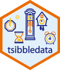

install.packages("tsibbledata") The tsibbledata package provides a diverse collection of datasets for learning how to work with tidy time series data. There are 12 time series datasets included in the package, each of which featuring a unique time series characteristics or structures. These datasets are stored as tsibble objects, which allows time series data to be used with the tidyverse.
The tsibbledata package is now available on CRAN, so it can be easily installed using:
Included datasets
ansettcontains more than 5 years weekly passenger numbers on Ansett Australia flights between pairs of Australian airports by ticket class. Ansett no longer in business, and the data features a major pilot strike and at least two definition changes for ticket classes.vic_elecprovides 3 years of half hourly electricity demand data for Victoria, Australia. The data also includes key predictors of demand: temperature and holiday information. The data contains multiple seasonal patterns, and strong non-linear relationships with temperature.aus_livestockdetails the monthly meat production in Australia for over 50 years. The data is disaggregated into 7 different groups of animals, for the 8 major states and territories of Australia.aus_productionfeatures the quarterly production of selected commodities in Australia for over 50 years. The included commodities are coupled by types:BeerandTobacco,BricksandCement,ElectricityandGas.aus_retailcontains monthly Turnover for 20 Australian industries between 1982 and 2018. The data is provided for the Australia’s 8 major states and territories. A wide variety of seasonal patterns and economic structures are evident in the 152 series.gafa_stockis an irregular time series of stock market data for Google, Amazon, Facebook & Apple. The stock’s volume and price information (opening, closing, adjusted closing, high and low) is available for every trading day between 2014 and 2018.global_economycontains annual macroeconomic indicators for 263 countries. The data sourced from The World Bank features GDP, Growth, CPI, Imports, Exports and Population, of which their availability varies between countries.hh_budgetdescribes the characteristics of household budgets for Australia, Canada, Japan and USA. Annual indicators of debt, disposable income, expenditure, savings, wealth and unemployment are available between 1995 and 2016.nyc_bikescontains individual trips for 10 NYC Citi Bikes in 2018. The start and end time of the trip is available at 1 second accuracy, along with the start and end position. Some demographic information about the rider including their ride type, birth year and gender is available.olympic_runningis a quadrennial (once every four years) dataset that contains the fastest running time for women and men’s 100m - 10000m races in the Olympics. Data from 1898 to 2016 is available, however some years are missing as the Olympics were not held during the World Wars.PBSprovides monthly subsidised prescription counts and costs from Medicare Australia (Australia’s universal health care system). It is disaggregated by the eligibility for concession, the type of concession (after some expenditure threshold, greater subsidies are provided), and the prescription’s ATC1 and ATC2 classification.peltfeatures the classic predator prey relationship between the Snowshoe Hare and the Canadian Lynx. It consists of the Hudson Bay Company’s annual trading records for pelts between 1845 and 1935.
Contributing to tsibbledata
The datasets above cover a diverse set of time series patterns. It covers regular and irregular data; non-seasonal, seasonal and multi-seasonal; frequent (30 minutes) and infrequent (4 years). Some data contain nested and crossed structures, some have relationships between variables or series.
The data in this package is far from comprehensively covering all types of time series. In particular, I’m searching for novel examples of time series that are unlike any other in the package. Some data types which I think will be useful additions to the package include panel/longitudinal data, higher frequency data (<1 minute frequency and <15 minute frequencies), and irregular seasonal patterns (such as non-gregorian calendar effects).
If you know of interesting datasets that meet the above criteria, or have a dataset that is unlike any other in this package, it would be great to include it in this package.
Additional resources
- The pkgdown site
- The GitHub repository
Citation
BibTeX citation:
@online{o'hara-wild2019,
author = {O’Hara-Wild, Mitchell},
title = {Introducing Tsibbledata},
date = {2019-06-15},
url = {https://mitchelloharawild.com//blog/tsibbledata},
langid = {en}
}
For attribution, please cite this work as:
O’Hara-Wild, Mitchell. 2019. “Introducing Tsibbledata.”
June 15, 2019. https://mitchelloharawild.com//blog/tsibbledata.